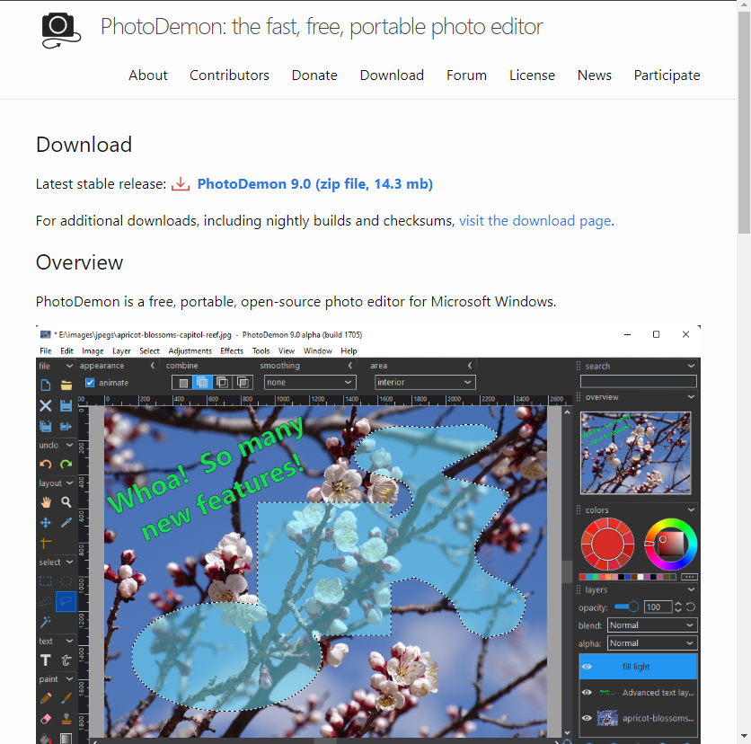
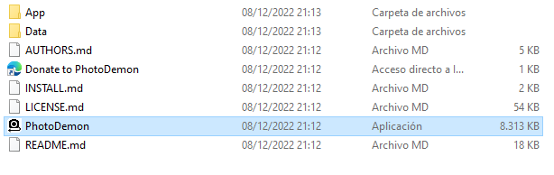

Como software portable, hemos decidido usar PhotoDemon, un programa muy sencillo de edición de imágenes
Como siempre, accedemos a su página oficial y descargamos la última versión estable
En este caso, solamente debemos extraer el archivo descargado, no requiere instalación. Lo copiamos en el pendrive o el medio que queramos utilizar y tendremos este programa de edición de vídeo en el bolsillo
Para ejecutarlo, simplemente daremos doble click en el archivo ejecutable